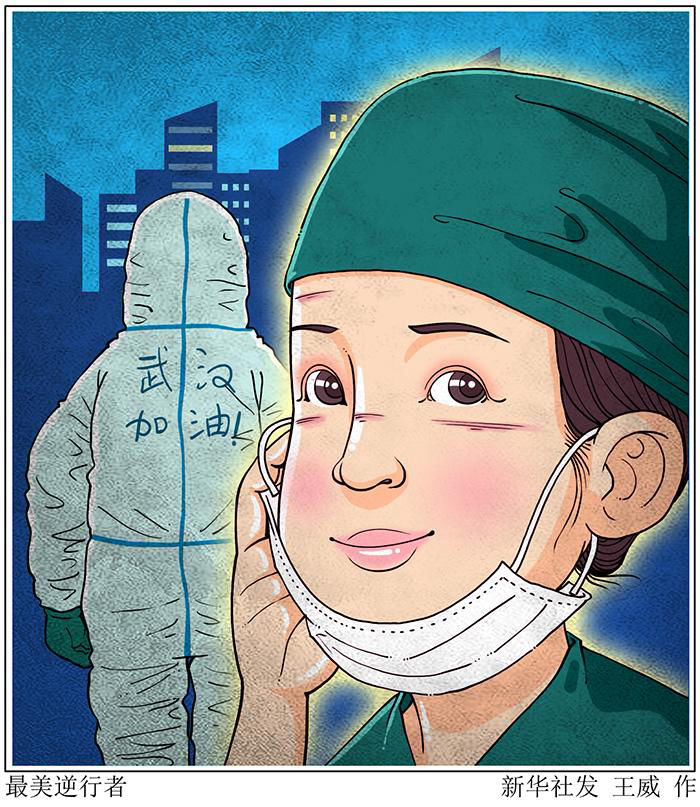
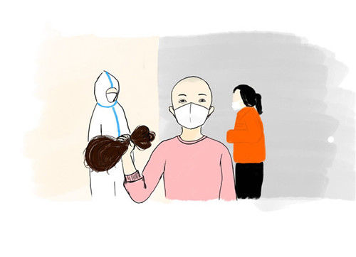
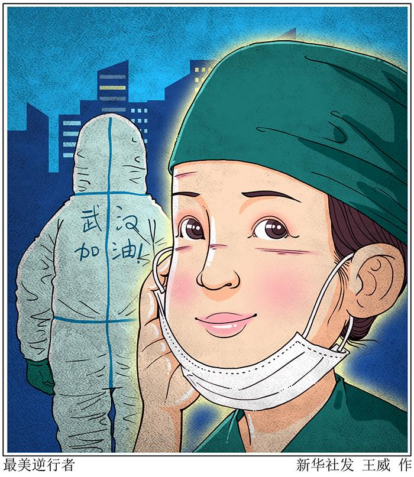
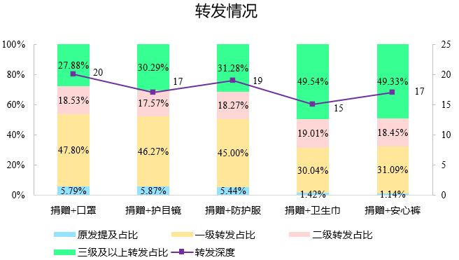

首页
专题
听她们说，不要听说她们
“她们”是谁？
“她们”的小玩意
尊重比赞美更重要
4008866166
simple web maker
尊重与帮助
比赞美更重要
编者按：
疫情期间，奔赴一线的女性医护人员做出了巨大的牺牲，很多医护人员剃光了自己的头发，处在生理期的女性也需要承担高强度的医疗工作。新闻媒体
关于女性医护人员的报道不断涌现，让公众为之感动，但也引发了一些争议。
面对女性医护人员——如何帮助她们？如何向她们致敬？这或许需要社会重新思考。
尊重比赞美更重要
得到尊重的美才是真正的美

（一）南大同学评论：她们的伟大，不仅因为是“她”们
（二）人民网评：女性逆行，尊重比赞美更重要
（三）中国青年报评：女医护人员需要生理用品，不是娇气更不是麻烦

（四）新京报评：女性医护人员剃光头出征——被赞美的逆行者，被忽略的女性

Previous
Next
Close
社会帮助
逆行者不是孤军作战，身后还有一整个社会
（一）探访：一场为女性发起的捐赠，面对“说不出口”“被忽视”的困境

（二）数据：大数据分析疫情期间谁在为女医护的生理关爱奔走发声？
Previous
Next
Close